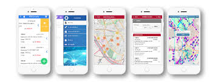

Software CMMS para automatización del mantenimiento, gestión y conectividad de activos, incorporando las tecnologías más avanzadas y con amplia variedad de módulos para administrarlos y controlarlos de forma global y centralizada. Rosmiman contribuye a la transformación digital aportando soluciones con las que la gestión y mantenimiento de los activos físicos se convierte en un área con retorno medible e impacto en la cuenta de resultados de la empresa. Todo ello con agilidad, usabilidad, flexibilidad y adaptabilidad, para proveer soluciones adaptadas a cada sector y sus respectivas particularidades. permiten no solo una gestión eficiente, sino, la posibilidad de acceder desde cualquier lugar, en tiempo real y desde cualquier tipo de dispositivo, así como más de 20 Apps inteligentes pensadas para facilitar la relación colaborativa y la comunicación con técnicos, usuarios y proveedores, con la capacidad de compartir datos e información de forma interna y en tiempo real, para la mejora en la toma de decisiones.
Permite compartir el escritorio, un control remoto estable y una transmisión de datos rápida y segura entre dispositivos.Te ofrecemos nuestros servicios de administración, optimización y mejora continua para la operación eficiente de tu solución ROSMIMAN®. Mantenemos la innovación permanente de los procesos empresariales y tecnológicos en la explotación a medio y largo plazo.
1.Instalar Rosmiman en tu computadora o servidor y configurar la base de datos y los parámetros de conexión, crear un usuario y contraseña para acceder al sistema.
2.Crear un nuevo activo ingresando la información del equipo, asignar un código de identificación.
3.Crear un plan de mantenimiento para cada equipo, asignar tarea de mantenimiento a los técnicos.
4.Gestionar una orden de trabajo especificando el equipo afectado y el técnico asignado.
5.Utiliza informes y gráficos Rosmiman para analizar el rendimiento de los equipos. 6.Integrar Rosmiman con otros sistemas para desarollar integraciones más personalizadas.